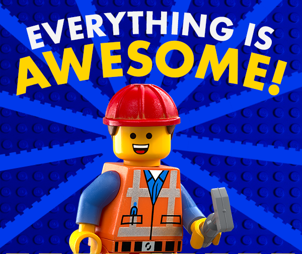
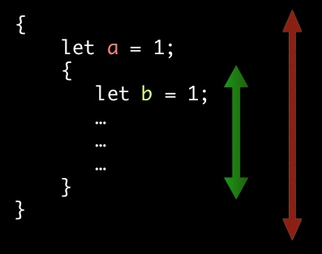

Carlos Cobo Barredo
February 5, 2016
Not this Rust!
FUNNY FACT: Every now and then a post about Rust (videogame) players appears on /r/rust. People just roll with it.
a systems programming language that
Truth is.. You probably don't care. But that's OK!
error: mismatched types: expected `&'a html5ever::tokenizer::Tokenizer<html5ever::tree_builder::TreeBuilder<dom::node::TrustedNodeAddress,dom::servohtmlparser::Sink>>`, found `&core::cell::RefCell<html5ever::tokenizer::Tokenizer<html5ever::tree_builder::TreeBuilder<dom::node::TrustedNodeAddress,dom::servohtmlparser::Sink>>>`
fn main() { println!("Hello, world!"); }
> Hello, world!
That's all I have.

unsafe block"C code"? Bindings for libraries exposing a C interface
FFI: Foreign Function Interface
No GIF on this one, sorry.
:blank:

You were just looking at the GIFs, were you?
| Name | Type | Example |
|---|---|---|
| (Un)Signed integer | isize, usize |
-1337isize, 9_001usize |
| Unsigned integers | u8, u16, u32, u64 |
0b0010_0110u8, 0xbeefu16, 134_217_728u32, ... |
| Signed integers | i8, i16, i32, i64 |
-63i8, ... |
| Floating point | f32, f64 |
2.7182f32, -3.1_415f32 |
| Name | Type | Example | |
|---|---|---|---|
| Unit | () |
() |
|
| Boolean | bool |
true, false |
|
| Array | [T] |
[1, 2, 3]
| fixed size |
| Slice | &[T] |
&[1, 2, 3]
| 'view' into an array |
| Tuple | (A, B, C...) |
(42u32, 1337i) |
| Name | Type | Example | |
|---|---|---|---|
| Unicode scalar value | char |
'a' |
32-bit unsigned word |
| Unicode scalar array | [char] |
['a', 'b', 'c'] |
~ UTF-32 string |
| Unicode string | str, String |
"rust is cool" |
array of 8-bit unsigned bytes ~ sequence of UTF-8 codepoints |
Most of the time you'll only use &str and String.
&str vs String?&'static str is inmutable and is stored directly on the final binary. Don't panic yet!&str is inmutable, a buffer and a length.String is mutable, a buffer, a length and a capacity.Basically, performance.
&str to String is expensive.String to &str is cheap.There's a lot more, like where they get allocated, but we don't care for now.
let s = "hello"; println!("The first letter of s is {}", s[0]);
This won't work.
Why? See it for yourself
let hachiko = "忠犬ハチ公"; for b in hachiko.as_bytes() { print!("{}, ", b); } // Will print: // 229, 191, 160, 231, 138, 172, 227, 131, 143, 227, 131, 129, 229, 133, 172, for c in hachiko.chars() { print!("{}, ", c); } // Will print: // 忠, 犬, ハ, チ, 公,
No more tables ahead.
Question time! Everything clear until now?
Don't be like this:

let x: i32 = 5; // type annotations are (usually) optional let x = 5i32; let y = "foo!";
let x = 5i32; x = x + 1; // error
let mut x = 5i32; x = x + 1; // ok
let x = 5i32; let mut y = x; y = y + 1;
Will this work?
let x = 5i32; let mut y = x; y = y + 1; // ok
Will this work? YES.

fn main() { let res = do_stuff(2, 3); println!("result is {}", res); } fn do_stuff(a: int, b: int) -> int { let c = a + b; return c * 2; }
fn do_stuff(a: int, b: int) -> int { let c = a + b; return c * 2; } fn do_same_stuff(a: int, b: int) -> int { let c = a + b; c * 2 }
WAT
fn main() { let name = "Curro"; let age = 40; println!("{} is {}", name, age); }
println!()is actually a macro, not a function.
We can re-order arguments by putting their index inside the braces.
fn main() { let name = "Curro"; let age = 40; println!("{1} is {0}", age, name); }
if age > 18 { println!("Have a beer!"); } else { println!("Sorry, no beer for you."); }
No parenthesis around the condition!
Who hasn't seen/written something like this?
let message = "Never seen in production :joy:"; if health > 0 { message = "Alive"; } else { message = "Dead"; }; println!("Status: {}", message);
if/else is an expression!
let message = if health > 0 { "Alive" } else { "Dead" }; println!("Status: {}", message);
The usual ones.
GOTCHA: There's no increment/decrement!
let a = 2i32; let b = -3i32; a += 1; b -= 1; // Won't work: // a++ // b--
while x < 10 { // do stuff }
loop { // do stuff }
Same as while true but generates better code for some cases!
for var in expression { code }
expressionmust be anIterator(that's for another day).
Classic for loop:
for (int i = 1; i < 10; i++) {
printf("%d\n", i);
}
In Rust:
for number in 1..10 { println!("{}", number) }

Cargo is Rust's one and only package manager. It:
Use Cargo for all your projects.
Hurray, yet another package manager YOU have to learn!
Good news is, we don't care right now.
We just want to run some Rust code!
$ cargo new hello_world --bin
$ cd hello_world
$ tree -i -f .
.
./Cargo.toml
./src
./src/main.rs
1 directory, 2 files
$ cargo run
Compiling hello_world v0.1.0 (file:///tmp/code/rust/hello_world)
Running `target/debug/hello_world`
Hello, world!
As simple as that!
run vs buildWe could also call cargo build and manually run target/debug/hello_world.
See that
debugon the path? That's because we didn't turn on optimizations!
fn fib(n: u32) -> u32 { // HALF A METER BEARD REQUIRED // ... // DARK ARCANE CODING ARTS } fn main() { let f = fib(10); // f should be 55 println!("The 10th Fibonacci number is {}", f); }
You have 5 minutes guys or until everyone gets it right.
Fibonacci was too easy?
Ok, let's step up our game...
An array is a fixed-sized list of elements of the same type.
let a = [1, 2, 3]; // a: [i32; 3] let b = [1u8, 2, 3]; // b: [u8; 3] println!("a has {} elements", a.len()); println!("the first element of b is {}", b[0]);
A vector is a dynamic, growable array
let mut names = vec!["Eiso", "Jorge"]; names.push("Phil"); // names[2] == "Phil";
let names = vec!["Curro", "Francisco"]; names.push("Paco Jones");
This won't work!
<anon>:5:5: 5:10 error: cannot borrow immutable local variable `names` as mutable
<anon>:5 names.push("Paco Jones");
^~~~~
<anon>:3:9: 3:14 help: to make the local variable mutable, use `mut` as shown:
<anon>: let mut names = vec!["Curro", "Francisco"];
error: aborting due to previous error
We forgot the mut so obviously we can't push into a inmutable vector.
A slice is a reference to an array.
A slice allows safe and efficient access to a portion of an array without copying.
let a = [0, 1, 2, 3, 4]; // A slice containing all of the elements in a let complete = &a[..]; // A slice with just the elements 1, 2, and 3 in a let middle = &a[1..4];
 Rules:
Rules:
Time is limited so use these:
git clone https://github.com/toqueteos/rwWelcome to 1980!
struct Rectangle { width: f32, height: f32 } struct Rocket { dead_monkeys: i32, wheels: i32, astronauts: f64, exploded: bool }
What's a static method?
What's a static method?
And a member method?
Methods (static and members) are defined inside an impl block.
struct Rectangle { width: f32, height: f32 } impl Rectangle { // Methods here. }
Static methods are defined this way, and can be called with Type::method_name().
impl Rectangle { fn new(width: f32, height: f32) -> Rectangle { Rectangle { width: width, height: height } } } fn main() { let rect = Rectangle::new(1.2, 4.9); println!("{}", react.area()); }
Member methods take a &self parameter, which is a reference to the struct the method is called on.
impl Rectangle { fn area(&self) -> f32 { self.width * self.height } } fn main() { let rect = Rectangle::new(1.2, 4.9); let area = react.area(); println!("{}", area); }
I probably need some water by now...
Come on guys, go to the bathroom.
Memory safety is enforced during compilation, there is no runtime overhead.
Rust is built around 3 concepts:
Time span during which a resource (value) is valid.
Seems trivial. IT IS NOT.

{
int *x = malloc(sizeof(int));
*x = 5;
free(x);
}
{
let x = 5i32;
// x gets deallocated here
// x dies horribly
}
When you pass data to a function (or even assign it to a variable), that data can be copied, moved, or borrowed (more about it soon).
Copy? Move? What's that?!
Raise your hand!

fn main() { let a = 5; let b = add_one(a); println!("{}", a); } fn add_one(x: i32) -> i32 { x + 1 }
struct Person { name: String, age: u32 } fn main() { let john = Person { name: "John".to_string(), age: 42 }; show(john); // `john` has already been deallocated } fn show(person: Person) { println!("{} is {}", person.name, person.age); // `john` will be deallocated here }
struct Person { name: String, age: u32 } fn main() { let john = Person { name: "John".to_string(), age: 42 }; show(john); show(john); } fn show(person: Person) { println!("{} is {}", person.name, person.age); // `john` will be deallocated here }
<anon>:9:10: 9:14 error: use of moved value: `john` [E0382]
<anon>:9 show(john);
^~~~
<anon>:9:10: 9:14 help: see the detailed explanation for E0382
<anon>:8:10: 8:14 note: `john` moved here because it has type `Person`, which is non-copyable
<anon>:8 show(john);
^~~~
error: aborting due to previous error
fn main() { let john = Person { name: "John".to_string(), age: 42 }; // `john` moves into show here show(john); // `john` is deallocated by now // so the next line doesn't compile show(john); } fn show(person: Person) { println!("{} is {}", person.name, person.age); // `john` will be deallocated here }
Assigning a value to a variable is similar to passing it to a function.
fn main() { let john = Person { name: "John".to_string(), age: 42 }; // `john` moves into `john_bis` here let john_bis = john; // so the next line won't compile show(john); } fn show(person: Person) { println!("{} is {}", person.name, person.age); // `john` will be deallocated here }
More water!
Questions? Bathroom break?
When you create a resource, you're the owner of that resource.
Being an owner gives you some privileges:
But it also comes with some restrictions:
You may lend that resource, immutably, to as many borrowers as you'd like.
fn main() { let john = Person { name: "John".to_string(), age: 42 }; // `john` moves into `show`. show(&john); // `show` hands us `john` back. show(&john); // the previous line will thus compile. } fn show(person: &Person) { println!("{} is {}", person.name, person.age); }
John is 42
John is 42
You may lend that resource, mutably, to a single borrower.
fn main() { let mut john = Person { name: "John".to_string(), age: 42 }; grow_older(&mut john); show(&john); // John is 43 } fn grow_older(person: &mut Person) { person.age += 1; }
The following will compile too, as grow_older gives us john back:
fn main() { let mut john = Person { name: "John".to_string(), age: 42 }; show(&john); // John is 42 grow_older(&mut john); grow_older(&mut john); show(&john); // John is 44 }
But this won't:
fn main() { let mut john = Person { name: "John".to_string(), age: 42 }; let mut john_bis = &mut john; grow_older(&mut john); show(&john); }
Let's see the error in a live environment: http://is.gd/CW3zaG
<anon>:11:21: 11:25 error: cannot borrow `john` as mutable more than once at a time [E0499]
<anon>:11 grow_older(&mut john);
^~~~
<anon>:11:21: 11:25 help: see the detailed explanation for E0499
<anon>:9:29: 9:33 note: previous borrow of `john` occurs here; the mutable borrow prevents subsequent moves, borrows, or modification of `john` until the borrow ends
<anon>:9 let mut john_bis = &mut john;
^~~~
<anon>:14:2: 14:2 note: previous borrow ends here
<anon>:6 fn main() {
...
<anon>:14 }
^
<anon>:13:11: 13:15 error: cannot borrow `john` as immutable because it is also borrowed as mutable [E0502]
<anon>:13 show(&john);
^~~~
<anon>:9:29: 9:33 note: previous borrow of `john` occurs here; the mutable borrow prevents subsequent moves, borrows, or modification of `john` until the borrow ends
<anon>:9 let mut john_bis = &mut john;
^~~~
<anon>:14:2: 14:2 note: previous borrow ends here
<anon>:6 fn main() {
...
<anon>:14 }
^
error: aborting due to 2 previous errors
fn main() { let mut john = Person { name: "John".to_string(), age: 42 }; // first borrow of `john` as mutable let mut john_bis = &mut john; // `john` cannot be mutably borrowed again, won't compile grow_older(&mut john); show(&john); }

let plus_one = |x: i32| x + 1; plus_one(2) // 2
let plus_two = |x| { let mut result: i32 = x; result += 1; result += 1; result }; plus_two(2) // 4
let factor = 8; let xs = vec!(1i32, 2, 3); let ys = xs.iter().map(|x| x * factor); // ys == [8, 16, 24]
sum types in the literature.data and Scala's case class.enum Boolean { True, False }
Rust's
booltype is not implemented this way as it is a primitive.
enum Boolean { True, False } let b: Boolean = True;
A value of type Boolean can be either True or False.
From the standard library (almost):
enum Ordering { Less, Equal, Greater } fn cmp(a: i32, b: i32) -> Ordering { if a < b { Less } else if a > b { Greater } else { Equal } } let ordering = cmp(x, y); if ordering == Less { println!("less"); } else if ordering == Greater { println!("greater"); } else if ordering == Equal { println!("equal"); }
Rust provides pattern matching, which lets you rewrite this:
if ordering == Less { println!("less"); } else if ordering == Greater { println!("greater"); } else if ordering == Equal { println!("equal"); }
as this:
match ordering { Less => println!("less"), Greater => println!("greater"), Equal => println!("equal") }
It also works with primitives:
let i = 5i32; match i { 0 => println!("zero"), 1 => println!("one"), _ => println!("> 1") }
Patterns must be exhaustive:
match ordering { Less => println!("less"), Greater => println!("greater") }
error: non-exhaustive patterns:
Equalnot covered [E0004]
There's a "catch-all" pattern: _.
match ordering { Less => println!("less"), _ => println!("not less") }
error: non-exhaustive patterns:
Equalnot covered [E0004]
Enums can also store data. One simple example is the built-in Option type. Here's how it is defined in the standard library:
enum Option<T> { None, Some(T), }
The type Option<T> represents an optional value of type T.
An Option is either
Some, and contains a value of type TNone, and does not contain anythinglet opt: Option<i32> = Some(5); let opt_plus_two = opt + 2;
error: binary operation
+cannot be applied to typecore::option::Option<i32>
To make use of the value inside an Option, we must pattern-match on it:
let opt: Option<i32> = Some(5); let opt_plus_two = match opt { Some(x) => x + 2, None => -1 }
This forces us to handle the case where there might be no value.
Options have a number of uses in Rust:
Option also provides a few convenience methods:
fn is_some(&self) -> boolfn is_none(&self) -> boolfn unwrap_or(self, def: T) -> Tfn unwrap(self) -> T Use with cautionA couple more:
fn map<U, F>(self, f: F) -> Option<U> where F: FnOnce(T) -> Ufn and_then<U, F>(self, f: F) -> Option<U> where F: FnOnce(T) -> Option<U>fn get_name() -> Option<String> { /* ... */ } let name: Option<String> = get_name(); let display_name = name.map(|n| format!("My name is {}", n)) .unwrap_or("I don't have a name"); println!(display_name);
If get_name() returns Some("Marie"), this will print My name is Marie, and if it returns None, this will print I don't have a name.
More water!
Questions? Bathroom break?
traits.A trait is a sort of interface that defines some behavior. If a type implements a trait, that means that it supports and implements the behavior the trait describes.
You can think of them as (better) Java interfaces. They are in fact very similar to Haskell's typeclasses.
One of the main differences is that you can define a trait implementation separately from the struct definition, even in another module. This means that you can eg. implement a trait you defined yourself for a type provided by a library.
They're also much more powerful (but won't get into too much detail here).
struct Rectangle { width: f32, height: f32 } trait HasArea { fn area(&self) -> f32; } impl HasArea for Rectangle { fn area(&self) -> f32 { self.width * self.height } }
fn main() { let rect = Rectangle { width: 1.2, height: 4.9 }; println!("{}", react.area()); }
struct Circle { radius: f32 } impl HasArea for Circle { fn area(&self) -> f32 { std::f32::consts::PI * (self.radius * self.radius) } }
fn print_area<T>(shape: T) { println!("This shape has an area of {}", shape.area()); }
error: type
Tdoes not implement any method in scope namedarea
fn print_area<T: HasArea>(shape: T) { println!("This shape has an area of {}", shape.area()); }
fn print_area<T: HasArea>(shape: T) { println!("This shape has an area of {}", shape.area()); } fn main() { let c = Circle { radius: 1.0 }; let r = Rectangle { width: 3.0, height: 2.0 }; print_area(c); print_area(r); }
This shape has an area of 3.141592654 This shape has an area of 6.0
print_area(10i32);
error: the trait
HasAreais not implemented for the typei32
We can implement traits for any type. So this would work, even if it makes no sense:
impl HasArea for i32 { fn area(&self) -> f32 { println!("this is silly"); *self as f32 } } fn main() { 10i32.area(); print_area(10i); }
Implementing traits for primitive types should generally be avoided.
One restriction:
Either the trait or the type you're writing the
implfor must be inside your crate (i.e. your library).

Rules:
I'll setup a matchmaking server to test implementations and find who's best!
More details soon :)
for x in 0i32..10 { // do stuff }
Iterator<T> provides a next() function that we can call repeatedly to get a sequence of values, each wrapped in Some. When no more values are available, next() returns None.
The for loop on the previous slide can be written like this:
let mut range = 0i32..10; loop { match range.next() { Some(x) => { println!("{}", x); }, None => { break } } }
Vectors can be iterated over too. Vec<T> provides an iter() method which returns an Iterator<&T> that we can use to iterate over the elements.
let nums = vec![1i32, 2, 3]; for num in nums.iter() { println!("{}", num); }
Iterator provides methods such as map, filter, take, and friends.
Iterators are not collections, they just allow to iterate over a (potentially infinite) sequence of elements.
It is possible to turn an Iterator into a collection with the collect method.
let a = [1i32, 2, 3, 4, 5]; let iter = a.iter().map(|&x| x + 1); let a_plus_one: Vec<i32> = iter.collect(); // a_plus_one = [2i32, 3, 4, 5, 6];
The type annotation is mandatory. let a_plus_one = iter.collect(); would throw an error.
You have already seen them. println!() is a macro. They're distinguishable by the ! at the end of the function name.
For another talk!
A "crate" in Rust is what you'd call a "package" or "library" in other languages. A crate contains modules (which can contain other modules).
If we have a greetings crate that contains a public module english that defines a public method hello(), we'd use it like this:
extern crate greetings; fn main() { greetings::english::hello(); }
The use keyword imports names in the local scope.
extern crate greetings; use greetings::english; fn main() { english::hello(); }
Questions?